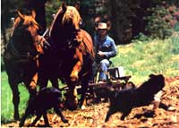
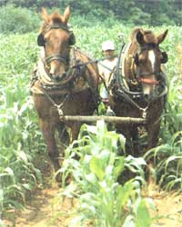
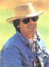
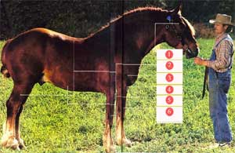

Issue # 106 - July/August 1987
Real horse power on the American farm.
"Come up, gentlemen," says Jason Rutledge. The two red horses heave forward into their collars. The field cultivator-called a rear-end wiggler-lurches into motion.
Rutledge proceeds into the cornfield, drawn unerringly down the rows by two Suffolk Punch geldings. As each tautly muscled leg moves and plants a round hoof in the soil, it presses 1,600 pounds into the ground. A prodigiously powerful step, but delicate as these things are measured.
Rutledge holds the reins firm. "You've gotta stay in touch with them all the time," he says, and they move quietly through the cornfield while Rutledge tells them how well they're doing. Three thousand feet up on Copper Hill in the mountains south of Roanoke, Virginia, where he lives with his wife. Sally, and two youngsters, Rutledge "orders up" all of his 76 acres with these chestnut horses. It is quiet on the mountain, and the team, plodding through the cornfield, evokes idyllic memories, old photographs, times gone by.
But Rutledge will have none of that.
"I don't want to give the impression that I'm a complete eccentric," he says as the horses stop for a breather. "These animals have a place on the modern farm. Look down there."
Between the rows of corn the soil is soft, loose, moist. "Practically no soil compaction," Rutledge says and, satisfied he's made a point, sets off again behind the team.
An intense, muscular man of 36, Rutledge talks eloquently and often about the place of the draft horse on the farm today, especially the place of this particular kind of horse-the Suffolk Punch. Today he is one of the major breeders of this rarest of workhorses-there are fewer than 400 in the U.S., with another 200-odd in England. He owns more than 20, including a stallion and 12 brood mares. He points out that they're the only workhorses specifically bred for the farm. All the others derive from animals bred for military work-hauling knights in armor and, later, cannons.
Rutledge himself was in the military, the Navy, when he saw his first Suffolk. He was in England and saw a little boy leading a huge chestnut workhorse along a country road. Years later, he recalled the sight and felt driven to find out more about that powerful but docile horse.
What the sailor saw was a descendant of Crisp's horse of Ufford, a stallion foaled in 1768 and the foundation horse of the breed, making Suffolks among the oldest known breeds of heavy horses-certainly the breed with the oldest continuous studbook. They arose to fill the needs of farmers in the then remote area of England comprising Suffolk and Norwich counties, a region bordered on three sides by the North Sea and on the fourth by a boggy region called the Fens. For many years, there were practically no sales of the horses outside the area, so the breed remained pure-and relatively unknown.
What kind of draft horse did frugal English yeomen breed to take on the rigorous task of plowing their heavy, clay soil? For one thing, they look different, even to the untrained eye. They run true to color. They are all chestnut. The official association for these animals won't register one that isn't within some seven hues of chestnut, from gold to liver, or one that has any other color on it (except a small white blaze or star or a splash of white on the ankles or fetlocks). Compared to the Percherons and Clydesdales you've seen hauling beer wagons, these horses are smaller and rounder (hence the British word punch ). In a sense, they look friendlier.
An expert notices that they seem short of back and short of leg, with especially heavily muscled forearms and thighs. The shoulders are upright-positioned for power, not speed. Also, the forearms and thighs are comparatively longer than those of other workhorses. As a result, to extend their legs forward, Suffolks need to lift them two and a half to three degrees of angle less than another horse, a modification that promotes power and movement with less action. These are horses that aren't likely to get stuck in the mud. Too, their coats are smooth down to the hooves: no long hair near the ground to collect mud and dirt. A special advantage is that, being smaller, they eat considerably less than other breeds of heavy horses.
It was 1978 when Jason Rutledge and his wife. Sally, dreamed their "Suffolk dream" and bought a few mares from "the killer man," at the ominous place where horses stop off before becoming horse meat. One of the mares turned out to be pregnant, and two years later Jason and Sally found an Amish man who traded them a stallion for the colt.
Rutledge was born to farms and farming-he learned land lessons from his "grampaw," known as Uncle Willie and now in his 80s. "Farming's made up the majority of my income for 15 years," Rutledge says. "Hay's one of my main crops... cabbage, tobacco. Got a little orchard, apples and some peaches." And, he adds, "I breed and sell Suffolks." He gets around $2,500 for what he calls an average purebred, but in truth, he says, "I'll take all the traffic will bear."
How powerful are the relatively small Suffolks? Rutledge takes some of his horses to pulling matches around Virginia and the surrounding states. Weighing in at about 1,600 pounds, they tend to be above the cutoff point (which is exactly 1,600 pounds), so they usually have to compete with the much larger heavyweights. So far, Rutledge's horses have not won in that class, but one of his teams has come in second, hauling 7,000 pounds of dead weight the required 26½ feet in the required time, only a few hundred pounds behind the winners.
Rutledge goes to the contests to make the breed better known. Suffolks almost disappeared in the 1950s when mechanized equipment virtually wiped workhorses off the farm altogether. Also, he confesses, those contests are "my kind of hot-rodding. You get those animals pulling 7,000 pounds, screeching along the ground ... that's a power trip."
Is it bad for the horses? "It can be, if you overdo it," says Rutledge. "Or if you don't have the right equipment." Each of his horses has its own collar, painstakingly fitted to produce the least friction on the animal's neck and shoulders-the same collar for pulling or farm work. No antiquarian, he uses specially designed nylon and leather harnesses. "Leather for where you need the harness to have a memory; nylon for give and strength." The nylon stretches, relieving the sudden shock in pulling, and it lasts longer.
Once, a woman came up to Rutledge to scold him for mistreating his horses by entering them in a pulling contest. Feisty as ever, he put his fingers in a circle on the horse's haunch. "See that?" he asked. "That's about the size of an Alpo dog food can. That's where this horse would be if he weren't out here. Do you suppose he'd rather be out here pulling and entertaining people or in the Alpo can?" Rutledge has pulled out of contests when he thought the conditions were wrong. "I don't ever want to hurt these animals." One of his Suffolks, obtained from another breeder, has a bobbed tail, a cosmetic custom that evidently makes the horses haunches look larger and more powerful. "That's just plain stupid cruelty," he explains in anger. "That's the end of their spinal column those (bleep) people cut off."
Rutledge speaks often of natural law, of every natural thing having a purpose, but has few good words to say about flies; he knows a horse without a tail suffers worse from them. He points upward to some turkey vultures circling an adjoining pasture. "See them? They eat carrion, clean up the place, sure, but did you know that anthrax bacillus can't make it through their digestive system? Everything has its role."
"These horses are one way of getting back to an old idea. It's called independence."
Weeds are a case in point. "You can't get rid of them, you can only control them." And because horses create the least amount of soil compaction, they are, to Rutledge, the best way to mechanically control weeds. Indeed, horses are a crucial aspect of all of those parts of the cycle that involve the central resource, topsoil. And Rutledge is a topsoil freak-for the very good reason that there isn't much of it on Copper Hill. Traditional moldboard plows-even though fellow Virginian Thomas Jefferson invented them-are anathema, but the relatively gentle effects of cultivating fields with horses preserve topsoil against erosion.
It takes about 50 years to create an inch of topsoil, he points out, and weeds themselves play an important role-if the farmer adapts to their cycles. In the first place, some-like morning-glory and ragweed-are actually good for corn. But they also demand crop rotation. The first year, Rutledge says, after a field is freshly tilled from sod, you can get away with one cultivation. The second year you need to cultivate twice; the third, three times. Then the handwriting is on the wall. Let it go fallow. "Those weeds will grow up and down, and their roots will help bring nutrients up to the topsoil." And in the natural course of crop rotation, planting a field to pasture not only helps the land, but it grows the fuel needed for the horses.
Meanwhile, the horses are producing manure. "Manure isn't good for anything until you compost it. Then you've really got something." And once you reintroduce the workhorse into the equation, you are into a different kind of agricultural economics altogether. It's nearly impossible to assign certain costs of horses to any traditional (or recently traditional) category of farm economics. Take manure. Once you have the horses in the barn, Rutledge says, you've got to get the manure out of there. Is that a health-maintenance cost (like keeping a tractor greased)? When you take it out to the field, is that a transportation cost (the horses are going out there anyway)? And once it's spread on the field, is that a fertilization cost or a waste disposal cost or what? A horse is no perpetual motion machine, of course, and it may be more labor intensive. But if it does a significantly better job, Rutledge says, it pays for itself.
He's the first to point out a horse's limits. "For heavy tillage, a tractor is more efficient. But for most of the rest, on a small farm, horses will do the work and add value to the land. That's what I call appropriate technology." They become most efficient in extreme situations-and Rutledge shares the biblical wisdom of all farmers that an extreme is always around the corner. In times of drought or in times of heavy rains, the horse is at its very best, even for the occasional odd job. Rutledge speaks self-deprecatingly about the time he got a truck seriously mired thanks to a lapse in attention. The tractor was useless in the deep mud, but one of his Suffolks hauled the truck onto dry ground in minutes.
Furthermore, he points out, "you can use a horse on any land where it can stand up. A horse does fine on land that's got over a 12% slope. Use a tractor there and you can end up field pizza." Toward the end of a day, Rutledge hitches up a team of two-year-olds to a large wooden sled he built. "These boys don't know nuthin'," he says. "They're the equivalent of two 15-year-old kids."
Nevertheless, under Rutledge's guidance, they proceed with what could pass for horse wisdom along the edge of a field. Grinning, Rutledge scoops something up from the ground and holds it up. It's a wren's nest, made in part with chestnut colored hair. "See, it's a rare Suffolkbird nest."
Further along, beside a forested slope, are a dozen mammoth logs. "Sally counted the rings on that big oak. It's 158 years old. These boys hauled it out of there-up the slope-without any trouble." He stops to examine the slightly disturbed ground where the logs had been pulled out of the forest. "Horses are best for selective logging," he says, and indeed they are still widely used for that purpose. "Logging roads and big skidders just wreck the forest, especially in hilly country."
Thunderclouds begin to unfurl in the west, and the sun drops down. On the way back to the barn, Rutledge stops the horses every few yards and hops off the sled to collect the quartz rocks that dot the pasture.
As he tosses the large rocks on the sled, he summarizes his case for the workhorse. "They create fertilizer, not pollution. When you use horses, you get to keep what you made. You grow your own fuel. And a horse appreciates in value. They get better each year for nine years, then they level off till they're about 12. That's a lot different from a tractor. Soon as you get a tractor out of the sales room, you've lost money. And you don't ever get up in the morning and go into the barn and find a little baby tractor there, do you?"
He pauses and leans one elbow on a chestnut haunch. The sky begins to sprinkle lightly.
"These horses," he says. "They can be part of the job of stewardship. They'll leave this land better off than when I came here. We don't need any more mining of the soil. And they're one way of getting back to an old idea. It's called independence."
Back on the sled, Jason Rutledge and his young team set off toward the barn. He tells them what a good job they've done, and a visitor realizes another benefit Rutledge derives from his horses. Out in the fields, working in the quiet of his mountaintop- "playing with his horses," as his wife cheerfully puts it-he is never alone during the long day of the farmer.
Jake Page lives and writes in Waterford, Virginia. His latest project is a book about the Navajo, which will be published by Abrams.
Benefits-and drawbacks-of farming with horses.
Let's pull back from Jason Rutledge and consider the significance of this hillside scene. After all, as the saying goes, nostalgia and scenery make thin soup. Are Rutledge and his Suffolks an isolated agricultural anachronism? Or does the draft horse have a practical place on the farm today?
Bill Gibbons, 300 acres, Ontario: "I've got a small dairy-15 to 20 cows. I use two teams of Belgians to spread manure, haul maple syrup sap, do all the planting and rake, ted and haul my hay. I use a tractor to load the manure, bale the hay and do heavy field work like plowing and disking."
Pat Miller, 160 acres, Montana: "I raise horses and cattle, restore wagons and work an outside job at a lumberyard. I use Percherons whenever possible, most often to feed and harrow. If I didn't have an outside job, I could do it all with horses. In winter, I don't hardly start a tractor, but do all my stock feeding with horses."
Paul Birdsell, seven-acre market garden, 55 acres in pasture and hay, Maine: "I use four, sometimes five, Belgians for all my farm work-plowing, cultivating and haying. In the winter, I log with them; I've got a 50-cord contract with Champion. Draft horses have held on well in this area. They're good for our poor soil, long winters and mud season. This farm has never been tractor-worked."
Robin Reading, 1,500 acres, Alberta: "I'm a cattle farmer, raise 120 head and 120 calves every year. This farm's been in my family for generations. We were pretty much out of horses in the '60s, but then we got a lot of snow and couldn't feed the animals with tractors. Now I have 10 Belgians and use them for about a fifth of my farm work. I cultivate, seed and cut, shock and load hay with them."
Chris Haugsten, 30 acres of grapes, California: "I use my Percherons a lot in the vineyard for spraying, sulfuring, cultivating, hauling boxes and harvesting. They don't get stuck in wet weather and can work hillsides that are too steep for a tractor. They're cheaper, too. I also do some logging with the horses, handle a lot of my hay work with them and make a little extra money giving hayrides. I use a tractor for heavy plowing and baling hay."
Gary Eagle, 100 acres, Washington: "I have 65 acres in hay, about 12 in oats and five in vegetables. I've been farming here about 15 years and use my horses for all the work: four Belgians when I'm plowing and doing other field work and two on the vegetables. I also have a stallion and six mares to breed stock for sale."
Clearly Jason Rutledge is not alone. But how many people are farming with horses? Good question. The editor of one prominent draft horse journal says, "Who knows? It's a mystery." The editor of the other confidently estimates "at least 100,000 people in North America."
Interestingly, a large number of these farmers use both horse power and horsepower: draft animals and tractors. (Rutledge himself fits in this group. "I've got a 60-horse-power diesel tractor. I chisel plow all my crop ground with it, then I disk and harrow the ground with horses. Hey, I'm a modern farmer-I owe the bank, the landlord, everybody. But there's still a place on every farm for a team. I believe in appropriate technology. When it's appropriate to use draft horses, use 'cm. When it's not, get them the hell off the field.")
Most of these "mixed-power" farmers see the two pulling sources as complementary. They claim that a tractor is best for the heavy work, for work you have to do over long distances or if you're in a hurry. But a team does a cleaner job. And it costs a lot less to purchase, own and maintain. "If I didn't have a team, I'd have to have a second tractor," is a frequent claim.
However, a number of farmers, such as Gary Eagle and Paul Birdsell, demonstrate that you can farm only with horse power. The two journal editors embody this contrast. Maurice Telleen, editor of Draft Horse Journal, says, "I was out this morning working up eight acres of oats. The hired man plowed ahead on the tractor. I harrowed behind with three horses." Lynn Miller, of Small Farmer's Journal, declares, "We plow up to 40 acres, cut hay on 80 and log off of 50 acres of timber. We use six Belgians to do all that. Well, actually, there was a borrowed tractor on my property today-to help me get a dead heifer out of a field."
Then there are the thousands of Amish farmers who use only draft power in their fields. The Amish are certainly a draft horse success story. They have kept their farms and communities thriving-indeed, they've almost doubled their numbers during the last two decades-in a time when the demise of the family farm is taken for granted. To a large extent, the Amish themselves credit the horse with keeping their farms intact. Wen-dell Berry (author, essayist, poet and draft horse farmer in Kentucky) once heard a Mennonite farmer say to an Amish one, "I wish I could persuade you people to use pneumatic tires on your equipment. It would be such a savings to the equipment and the horses, too." The Amish farmer replied, "If we do that, we'll make our machinery able to be pulled by a tractor, to go straighter in the fields and so forth. The first thing you know, we'll be using tractors. And I want my children to farm." His point, Berry explains, was that if the offspring were to hope to farm, they would have to farm with horses.
That statement hints at one of the most fascinating aspects of using draft horses: They work best on, and therefore help create, small, diversified, sustainable farms-exactly the kind that seem so rare yet desirable today. Here's why:
1. Draft horses are efficient only close to home. You can't work rented "widow 40s" miles away with horses; it takes too long for them to walk there. So the farm must be relatively small (most horse-powered farms are under 200 acres) and compact. Horses are also, in general, slower than tractors-another limit on farm size.
2. Draft horses are most economically efficient if you take advantage of the side benefits they offer. One of these is the fact that you can grow their feed. This promotes a diversified farm that includes pasture, hay and grain. Not only does this dramatically lower a farmer's expenses and raise his or her independence (no bill for tractor fuel), but it promotes soil-conserving diversity and crop rotation. As Maurice Telleen puts it, "Using draft horses flies in the face of monoculture."
3. Once you're using land to produce horse feed, the easy and logical next step is to raise some other livestock. Most draft horse farmers do, indeed, raise cattle, sheep or some other stock as well as their work animals. Two species will usually do a more efficient job of grazing a pasture than horses alone.
4. Draft horses supply nine to 15 tons of manure a year, each. Manure's so valuable for soil fertility that farmers like Chris Haug-sten claim, "You can't have an organic farm without having animals."
5. Draft horses do a better job. They compact the soil less, cultivate it more cleanly, plow the right depth more often and log with less damage than internal combustion machinery. As Wendell Berry remarked after examining horse-and tractor-worked fields, "I can say unhesitatingly that, although the tractors do faster work, they do not do it better."
Overall then, draft horse farmers can't farm as much land, but they make up for that on the debit side of the ledger: no fuel bills and fewer fertilizer bills. The initial cost is also less: You can get a team of good horses for around $1,800, while a small tractor runs $12,000 to $15,000. Repairs are cheaper. ("I never had a $600 clutch job on a horse," notes Chris Haugsten.)
The bottom line: less income, but less expense. Most businesses expand in good times, but draw back and cut costs in bad. In these bad times for farming, running a tighter, more economical farm makes sense for some people.
Of course, working with horses does have some drawbacks of its own. As mentioned earlier, the work goes more slowly, so you can't cover as much ground. Working horses is more physically demanding than driving a tractor. Most important, horses demand extra commitment. You can take the key out of a tractor and leave it alone for two weeks, but horses demand daily attention whether they're working or not. Maurice Telleen: "Today at lunchtime, the hired man turned off the tractor switch and went home. I took the horses to the barn, watered them. After I grabbed a bite for myself, I watered and fed them again. Tonight I'll have to unharness, cool and feed them again."
Horse farming takes more skill. John Cookson (horse logger, Maine) says, "Buying a horse is the easiest thing in the world. They don't cost diddly! It's after that, that things get really crucial." You need to know how to properly feed a horse, work it, deliver its offspring, care for its health problems. Tractors don't die from being misted. They don't get spooked by mishandling and become runaways. Paul Birdsell: "When you're working with a horse, you always have to know what to expect and anticipate any possible trouble. If you don't, the results can be tragic."
How do you gain such skills? Well, for a start there are two very good magazines and two instructional books. Lynn Miller edits the quarterly Small Farmer's Journal (subscriptions $ 15 a year; sample issue $5, from SFJ, P.O. Box 2805, Eugene, OR 97402) and is the author of the Work Horse Handbook ($14.45 postpaid from the same address). Maurice Telleen edits the quarterly Draft Horse Journal (subscriptions $14 a year; sample issue $3.50, from DHJ, Box 670, Waverly, IA 50677) and wrote The Draft Horse Primer ($12.95 postpaid from the same address). Both books and magazines are good; Miller's magazine is solely farming oriented; Telleen's covers the show and sales trade, as well.
But while books and articles are helpful, they are far from enough. Both Telleen and Miller readily admit that the only good way to learn is from an experienced teamster. Search for one in your community, enroll in one of the instructional schools listed in the draft horse magazines, apprentice for a season on a horse-powered farm. If you don't get such hands-on education, at the very least buy a well-broken team. That way, the horses can be your instructors.
Such hands-on experience will also help you make up your own mind concerning the factor that many farmers consider either the main advantage or disadvantage of farming with horses. Jack Carver (Belgians, 60 acres, New Hampshire) puts it this way: "Oh, I can tell people all the 'good' reasons why I farm this way, but the truth is I like to use horses. I love this way of life." Ken Demers (Percherons, 150 acres, Massachusetts): "When I drive a tractor, it's just a job. But when I pick up the lines and drive a pair of horses, I'm about eight feet tall. And I enjoy every minute of it."
"To work all day with a well-broken and willing team is a pleasure as well as a job."-Wendell Berry
Horses are quiet, tractors are loud. Horses are temperamental, personal, attention-demanding ... company. And there's the rub. If you find that you don't enjoy working with horses, you absolutely should not do it. All the extra care and attention they demand will soon become a burden. If, on the other hand, you take pleasure in their company and the quality work they do, then even the caretaking chores become pleasures of their own.
|
 PHOTOGRAPHS © KENNETH GARRETT WOODFIN CAMP & ASSOC. These horses are one way of getting back to an old idea. It's called independence."" |
 PHOTOGRAPHS © KENNETH GARRETT WOODFIN CAMP & ASSOC. THE FARMER'S FRIEND The Suffolk is the only draft horse bred for farm work. 1. It has a docile temperant and agreat willingness to work. 2. The short back and legs give the horse a good build for pulling. 3. Shoulders are upright?positioned for power, not speed. 4. Forearm and thigh muscles are especially long and strong. 5. An efficient keeper, it does more work on less feed. 6. The smooth coat on the legs doesn't collect dirt and mud. |
 PHOTOGRAPHS © KENNETH GARRETT WOODFIN CAMP & ASSOC. |
|
 PHOTOGRAPHS © KENNETH GARRETT WOODFIN CAMP & ASSOC. |
|
|